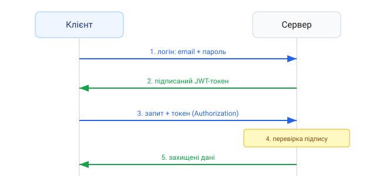

1. Автентифікація vs авторизація
- Автентифікація — хто ти? (перевірка логіна/пароля);
- Авторизація — що тобі дозволено? (доступ до ресурсів за роллю).
2. Ніколи не зберігайте паролі відкрито
Паролі зберігають лише у вигляді хешу — необоротного перетворення. Для
цього беруть bcrypt.
const bcrypt = require('bcrypt');
// при реєстрації
const hash = await bcrypt.hash(password, 10);
// зберігаємо в БД саме hash, а не пароль
// при вході
const ok = await bcrypt.compare(password, user.passwordHash);
if (!ok) return res.status(401).json({ error: 'Невірні дані' });Зберігання паролів у відкритому вигляді — критична вразливість. Хешування з «сіллю» (bcrypt робить це автоматично) обовʼязкове завжди.
3. JWT-токени
JWT (JSON Web Token) — підписаний токен, який сервер видає після входу. Клієнт надсилає його з кожним запитом, а сервер перевіряє підпис.

const jwt = require('jsonwebtoken');
// видати токен після успішного входу
const token = jwt.sign(
{ userId: user.id, role: user.role },
process.env.JWT_SECRET,
{ expiresIn: '1h' },
);
res.json({ token });4. Захист маршрутів
Middleware перевіряє токен і додає користувача до запиту.
function auth(req, res, next) {
const header = req.headers.authorization; // "Bearer <token>"
const token = header && header.split(' ')[1];
if (!token) return res.status(401).json({ error: 'Немає токена' });
try {
req.user = jwt.verify(token, process.env.JWT_SECRET);
next();
} catch (e) {
res.status(401).json({ error: 'Невалідний токен' });
}
}
app.get('/api/profile', auth, (req, res) => {
res.json({ userId: req.user.userId });
});5. Перевірка ролей
function requireRole(role) {
return (req, res, next) => {
if (req.user.role !== role) {
return res.status(403).json({ error: 'Немає прав' });
}
next();
};
}
app.delete('/api/users/:id', auth, requireRole('admin'), handler);Альтернатива JWT — сесії з cookie. JWT зручні для API та мобільних клієнтів; сесії — для класичних вебдодатків. Обидва підходи валідні.